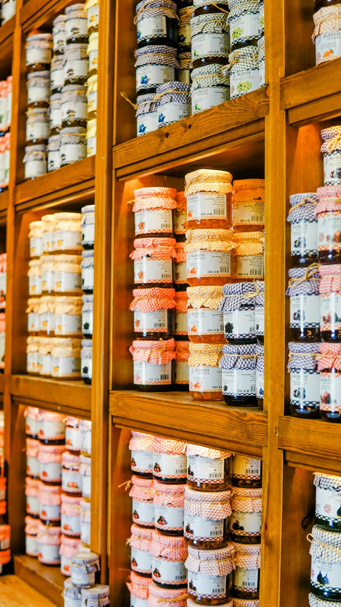
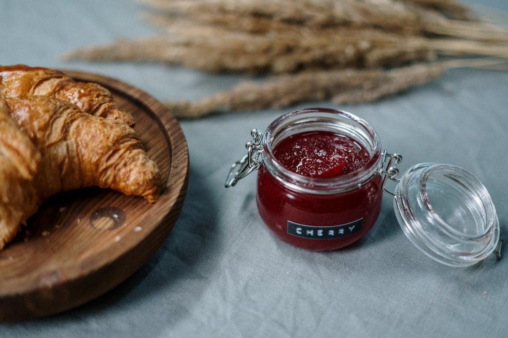

行動心理学・実験社会心理学
2000年、カリフォルニアの高級スーパーに6種のジャムと24種のジャムが交互に置かれた。10倍の差が生まれ、心理学の教科書はまだその差の話を続けている。だが10年後、50本の追試がそろえた答えはこうだった——平均効果はほぼゼロ。
Iyengar & Lepper『When Choice is Demotivating』が Journal of Personality and Social Psychology 79巻6号に掲載される。
同年、初の南北朝鮮首脳会談、ロシア大統領にプーチンが当選、AOLとタイム・ワーナーが合併合意。Y2K問題の年明けは静かに過ぎた。
本記事では、有名な単一実験と、その後の論争の両方を扱う。「全員が間違える話」ではない。「全員が前提を確かめずに引用してきた話」である。
休日のスーパー。オリーブオイルを買おうとして陳列棚の前に立つ。エキストラバージン、コールドプレス、シングルオリジン、ブレンド、緑色の瓶、茶色の瓶、イタリア産、スペイン産、チュニジア産。値段はどれも近い。
気がつくと5分が経っている。説明を読むほど、選ぶ理由が増えるのではなく、選ばない理由が増えていく。最後にカゴに入れたのは、いつも買っているやつか、隣の棚のパスタソースだった。誰にでも覚えのある、あの止まる感じ。
その「止まる感じ」を最初に実験室の外に持ち出したのが、24種のジャムと6種のジャムを並べたあの実験だった。
有名な「ジャムの実験」は、その結論よりも、結論のその後の方が面白い。本記事では、選択肢の多さがなぜ手を止めるのかを実験室のジャム棚で追体験したあと、追試の山がどう答えを揺らしたかを並べて見る。
2000年6月のある土曜日、サンフランシスコ湾岸の小さな町メンロパークにある高級スーパー Draeger'sDraeger's Market
1925年創業、サンフランシスコ湾岸の高級食料品店。300種類以上のジャムや250種類のマスタードを並べることで知られた品揃え自慢の店で、心理学の現場実験の舞台になった。今もメンロパーク本店ほか数店舗を運営している。 で、若い心理学者シーナ・アイエンガーと、彼女の指導教官マーク・レッパーは、店の入口近くにイギリスの老舗 Wilkin & SonsWilkin & Sons (Tiptree)
1885年創業、エセックス州ティップツリーで設立されたイギリスの老舗ジャムメーカー。エリザベス女王の御用達(Royal Warrant)を授かっていたブランドで、実験で使われたジャムはストロベリー、キウイ、ピーチ、ブラックチェリー、レモンカードなど。 のジャムを並べた試食台を出させてもらっていた。Draeger's はもともと300種類以上のジャムを置いている店で、試食台は珍しい光景ではない。客は普通の買い物のついでに、いつも通りに通り過ぎていく。
仕掛けはひとつだけだった。土曜日の数時間ごとに、試食台に並ぶジャムの数を入れ替える。あるときは 6種類、あるときは 24種類。それ以外の条件——同じブランド、同じ値段、試食は自由、立ち寄った客全員に1ドル割引クーポンを渡す——は変わらない。離れたところから観察者が、立ち寄った客の数と、試食した数と、レジで実際にジャムを買った客の数を、ただ静かに記録していた。
2人が知りたかったのは、当時の心理学・経済学の常識を裏返す問いだった。それまで何十年もの研究は、人に 自己決定自己決定理論
1980年代にデシ&ライアンが提唱した動機づけ理論。人の内発的動機は、自律性・有能感・関係性が満たされたときに最大化する。「選択肢を与えられること」は自律性の中核と考えられてきた。 の余地を与えるほど、動機づけも満足度も上がるという結論をそろえてきていた。だとすれば、品揃えは多ければ多いほどいいはずだ。アイエンガーとレッパーは、ここに疑いの目を向けた。「選択肢が多すぎる」状況は、人にとっては逆に重荷になるのではないか。
記録された数字は、それまでの常識をきれいに裏切っていた。24種類の方が立ち寄った客は多い。だが、立ち寄った客のうちレジに進んだのはわずかひと握りで、6種類の試食台に立ち寄った客の方が、結果としてはるかに多くジャムを買って帰った。具体的な数字をならべると、こうなる。
| 条件 | 通行人 | 立寄率 | 試食数(平均) | 購入率 |
|---|---|---|---|---|
| 6種類の試食台 | 104 | 40% | 1.38 | 30% |
| 24種類の試食台 | 145 | 60% | 1.50 | 3% |
立ち寄った客のうち買った人の割合は、24種類で 3パーセント、6種類で 30パーセント。10倍の差。試食した品数はほぼ変わらない(1.50 と 1.38)のに、購入の段になって24種類側だけが選びきれずに離脱していった。アイエンガーとレッパーは、同じ現象を実験室の中でもう2回確かめてみせた。1回目は高級チョコレートで、2回目はスタンフォード大学の心理学入門講義で「6つのテーマから1つ選んで小論文を書けば追加点」と「30のテーマから1つ選んで小論文を書けば追加点」を比較した。どちらでも、選択肢が少ない方が、選び終えたあとの満足度も、提出率も、書かれた小論文の質さえも高かった。
"Ne quid nimis. — In all things moderation."
何ごとも度を越すべからず。
— アイエンガー & レッパー(2000年)論文冒頭のエピグラム
発表された論文は、まず学界を、それから一般読者を強く動かした。バリー・シュワルツは2004年に The Paradox of Choice という一般書を出版し、ジャムの実験はその主役になった。「選択肢が多すぎる現代社会は人を不幸にする」という診断は、TEDトークやハーバード・ビジネス・レビュー、マーケティングの教科書、UXデザインの講義、行動経済学の入門書を経由して、2010年代の常識として定着していった。少なすぎる選択肢は窮屈だが、多すぎる選択肢もまた人を麻痺させる。これは「直感に反するけれど美しい結論」の典型として、誰もが引用したくなる話だった。
選択肢が n 個 あるとき、ペアごとに比べる「組合せ」は n(n−1)/2 通り。6個なら15通り、24個なら276通り、30個なら435通り。選択肢が4倍になっても、頭の中で行う比較は18倍を超える。スライダーを動かして、ペアの線が一気に増えるところを見てほしい。
この計算は、ジャムの実験を「あ、なるほど」と腑に落ちさせる説明だ。選択肢が増えると、人が頭の中でやらなければならない比較の数は、その何倍ものスピードで増える。脳の ワーキングメモリワーキングメモリの容量
1956年のミラーの「マジカルナンバー7±2」、現代の研究ではより小さい4±1とされる(Cowan 2001)。同時に保持できる情報の塊の数。 は数チャンクしか同時に保持できないので、20を超える瓶が並んだ時点で、もう脳の中で並べきれない。並べきれなければ、選べない。選べなければ、後悔の予感だけが残って、手は動かない。少なくとも、それがこの実験から導かれた素直な解釈だった。

これからやってもらうのは、簡単な3ステップの体験だ。仕掛けは単純で、ジャムの並ぶ画面が出る。気に入った1本を選ぶ。それだけ。ただし最初の画面と次の画面では、瓶の数が違う。それぞれの画面で、決定までに何秒かかったかを裏で記録している。決まらなければ「選ばずに離れる」ボタンを押してもいい(離れた回数も記録する)。最後に、あなたの数字と、2000年の Draeger's の客たちの数字を、並べて見る。
これは「正解を当てる」ゲームではない。あなた個人の中で、6種と24種のあいだに何が起きるかを、自分の手元で確かめる装置だ。
これから3つのフェーズで、あなたが選ぶときに何が起きているかを記録する。Phase 1 は6種・時間無制限、Phase 2 は24種・制限時間10秒、Phase 3 は24種・時間無制限。同じ「多い選択肢」でも、時間があるかないかで何が変わるかを、自分の手で確かめる。
数字が出た。ここからの読み方は2段階ある。1段階目は素直な確認。2段階目は、その確認のあとに起きる小さな揺れ戻し。それを次のセクションで丁寧に追っていく。
2009年から2010年にかけて、ベンジャミン・シャイベヘンネを中心とするチームが、ジャムの実験以後10年間に出された「選択過多」関連の実験論文をすべて集めて、メタ分析にかけた。集まったのは50本の論文、63条件、被験者数の合計は 5036人。1人の被験者の声が消えても、5000人の声が一斉に同じ方向を向けば、効果は実在すると言えるはずだ。彼らはそれを確かめにいった。
出てきた答えは、研究者たちが半ば予想していたよりも、ずっと冷たかった。50本ぜんぶを平らにならすと、選択肢が多いことによる「選びにくさ」「満足度の低下」の効果量は、事実上ゼロ。0でないにしても、ゼロのまわりで揺れている。同じ方向を向いて並んでいる効果は、見つからなかった。
"Across the 50 experiments, which depict the choices of 5,036 individual participants, the authors found that the overall effect of choice overload was virtually zero."
5036人の選択を扱う50件の実験全体を通して、選択過多の総合効果はほぼゼロだった、と著者たちは結論づけた。
— シャイベヘンネら『Journal of Consumer Research』(2010年)
これは、原実験の発見を否定する種類の発見ではない。Draeger's の試食台で6月のあの土曜日に何が起きたか、その記録自体は変わらない。そうではなくて、「あの効果は、世界のいろいろな場所で、ジャム以外のものでも、起きているのか?」という別の問いに対して、答えが 「いつもは起きない」 だった、ということだ。10年分の追試の山は、原実験の結論を否定したのではなく、原実験の結論が 普遍的なものではない ことを示した。
話はここで終わらない。2015年、ノースウェスタン大学ケロッグ経営大学院のアレクサンダー・チェルネフらが、99本の論文を集めて再びメタ分析をやり直す。今回は「効果があるかどうか」ではなく、「効果が出るのはどういう条件か」を調べた。答えは4つの条件にまとまった。
この4つを並べてみると、Draeger's の試食台が「効いた」理由がぼんやり見えてくる。試食台に立ち寄った客は、ジャム選びに大した時間をかけたくない(④努力最小化)。並んでいるのは外国製の高級ジャム、つまり多くの客にとって自分の好みがはっきりしない領域(③選好の不確か)。土曜の買い物の途中で、他にもやることがある(①時間の制約)。条件はそろっていた。一方で、ワインの目利きにとってのワインや、自分の好きな本のジャンルがはっきりしている人にとっての書店では、これらの条件は揃わない。条件が揃わなければ、選択肢は多い方がむしろうれしい。
24種類のジャムの試食台は、6種類より 多くの客を立ち寄らせた (60% vs 40%)。豊かさそのものが誘引になる。陳列の段階では「多い方が良さそう」という直感は正しく機能している。問題はその次に起きる。
選択肢が n 個あれば、ペア比較は n(n−1)/2 通り。6個で15通り、24個で276通り。実際にはすべてのペアを総当たりするわけではないが、「これとあれを比べて、それから別のと比べて」と巡回するうちに、同じ瓶を何度も見直す ことになる。
選択肢が増えるほど、ある瓶を選ぶことで 諦めなければならない他の瓶 が増える。これは「機会費用」が知覚として迫ってくる現象で、後悔の予感 として頭に残る。後悔の予感が強い決定は、先送りされやすい。
選び終える前に、エネルギーが底をつく。脳は 決定そのものを諦める という選択肢を取る。これが 決定回避決定回避(decision avoidance)
選択を先送りする、何もしないことを選ぶ、デフォルト選択肢に流れる、といった行動の総称。Anderson 2003 のレビューが代表的。 として現れる。Draeger's の3パーセントは、たぶんこれだ。
面白いのは、ここまで丁寧に追ってきた4段階のメカニズムが、「選択過多が起きるとしたら、こういう経路で起きるはずだ」という説明だという点である。10年分の追試がこの経路をいつも辿るとは限らないと示した。経路自体は理に適っているのに、経路をたどる人と、たどらない人がいる。だから論争は今も続いている。
ジャムの実験を一言で説明しろと言われたら、こう言うのがいちばん近い。あれは「選択肢が多すぎると人は選べなくなる」という教訓ではなく、「ある条件が揃ったとき、人は選べなくなる」という条件付きの観察である。Draeger's の客たちは、たまたまその条件をぴたりと満たしていた。土曜日の買い物の途中、外国製の高級ジャム、好みは決まっていない、急いでいる。だから10倍の差が出た。
ここから引き出すべき結論は、たぶん2つある。1つ目は実用的な結論で、自分が何かを選ぼうとして手が止まったとき、それは性格や意志の弱さの問題ではなく、4つの条件のうちいくつかが揃っているせいだということだ。条件を1つ崩せばいい。決める時間を増やす(①を崩す)、属性を絞ってシンプルにする(②を崩す)、自分の好みを先に1つ決める(③を崩す)、急がない(④を崩す)。条件のうち1つでも崩れれば、選択肢の数はもう敵ではなくなる。
2つ目はもう少し冷たい結論で、こちらの方が大事かもしれない。ひとつの鮮やかな実験を、その後10年の追試の山と切り離して引用してはいけない。これは「選択のパラドックス」という話の教訓ではなく、心理学という分野そのものの教訓だ。2000年代に有名になった心理学の発見の多くが、2010年代の 再現性危機再現性危機(replication crisis)
2010年代以降、心理学・医学・経済学などの分野で、過去の有名な実験結果が追試で再現しないケースが多発し、研究方法そのものが問い直された一連の出来事。 の中で揺らいだ。揺らがなかった発見も、揺らいだ発見も、両方ある。揺らいだ発見の中にも、完全に消えたものと、条件付きで生き残ったものがある。「ジャムの実験」は、その3つ目のパターン、つまり条件付きで生き残った発見の代表例だった。
あの実験は外れたのではない。あの実験を、世界のどこでも起きる話として引用してきた読み手のほうが、外れていたのだ。
— from this article
